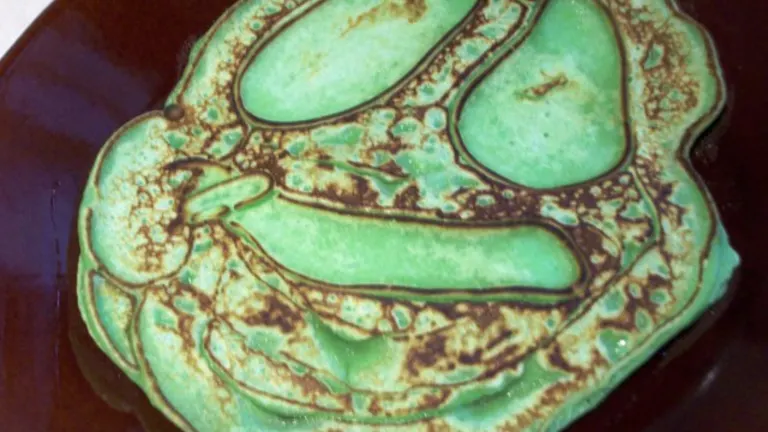

Fried Kool-Aid

Description
You can fry anything nowadays!
Ingredients
- vegetable oil (for frying)
- 1/4 cup sweetened Kool-Aid drink mix
- 3 eggs
- 1/4 cup sugar
- 1/2 tsp salt
- 2 tsps baking powder
- 2 cups milk
- 3 2/3 cups flour
Steps
- Make the batter by beating eggs and sugar together
- Gradually add milk and dry ingredients
- Preheat oil to 350 degrees
- Cook in hot vegetable oil until golden brown
- Cool on paper towel covered tray for a few minutes
- Enjoy!